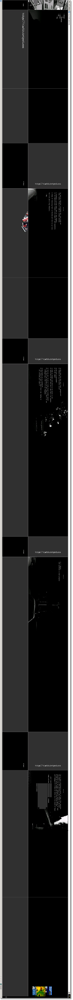
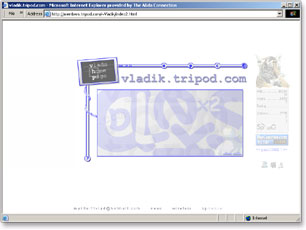
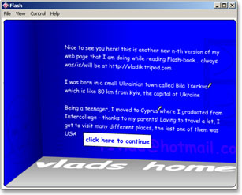
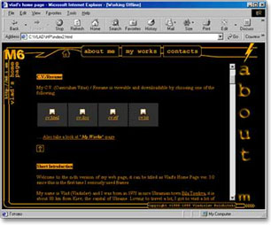
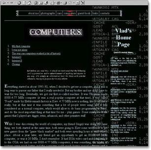
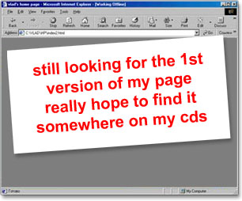

vladik.tripod.com is personal home page of Vladislav Kulchitski.

Version 6

Version 5

Version 4

Version 3

Version 2

Version 1
March 4, 2003
vladik.tripod.com is personal home page of Vladislav Kulchitski.





